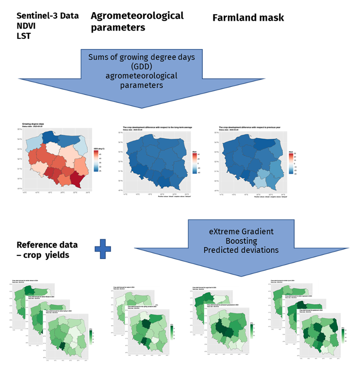
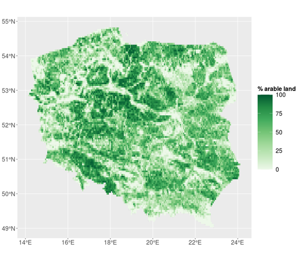
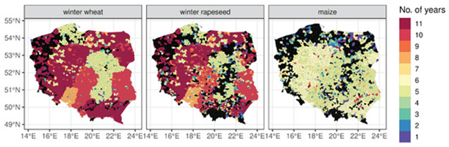
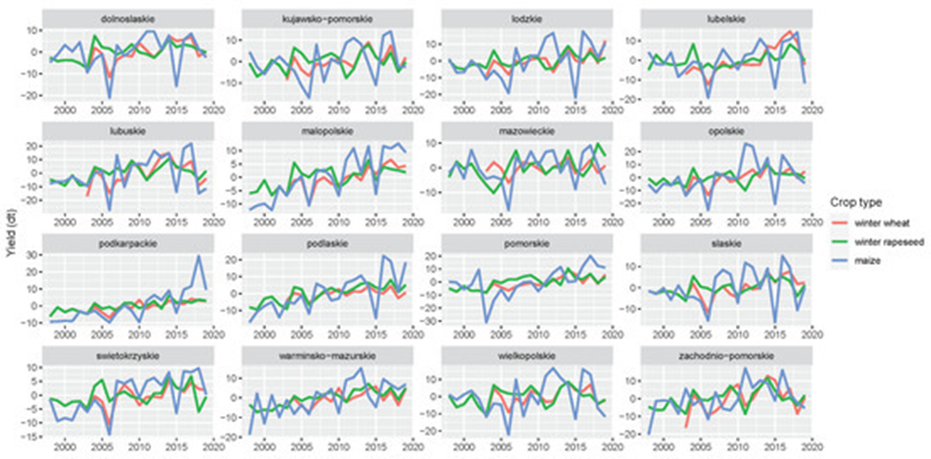
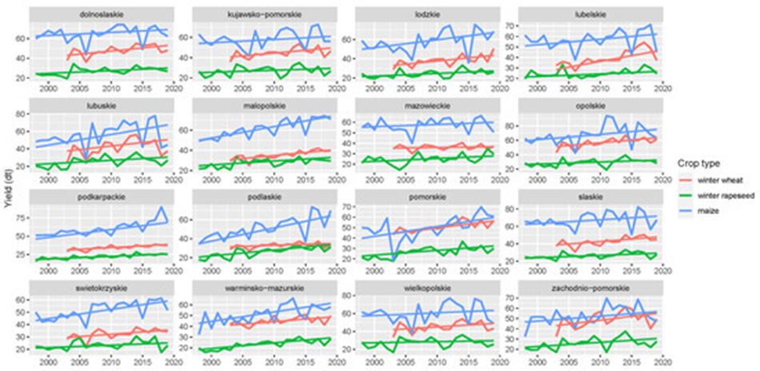

21 Yield Forecasting in Poland
21.1 Introduction
Remote sensing technologies have increasingly become vital tools in modern agriculture for crop health monitoring and yield estimation. Open access to satellite imagery allows for the capture of spatial and temporal changes in crop growth, and in consequence more timely and accurate yield forecasting. The ultimate aim of this study is to provide a methodology to estimate crop yields on a country scale during the growing season. This responds to the need of statistical offices (in this case Statistics Poland) that are obliged to provide statistical information on agricultural production.
In this context, this study aims to evaluate with what accuracy yield forecasts can be produced using an automated system running on publicly available data. Therefore, within this study, a novel system for an operational crop yield forecasting at Nomenclature des Unités Territoriales Statistiques level 2 (NUTS-2) and Local Administrative Units (LAU) is proposed.
The system exploits Copernicus data sets and climate reanalysis at a global scale, and thus can be applied at any location. The system is dedicated for predicting yields of several crops, namely, winter wheat, winter rapeseed, or maize. Although, the particular software solutions have been developed for yield predictions in Poland, the concept of the model can be successfully used in any country. Obviously, other data bases, reference information or different settings of parameters should be then included.
21.2 Data
The yield estimation methods applied in this study integrate multiple sources of publicly available data, including satellite-derived vegetation indices, agro-meteorological indicators, and thermal-based crop development metrics. The yield forecasting model is shown in Figure 21.1.
21.2.1 Sentinel-3 data
Sentinel-3 Level-2 Near Real Time (NRT) products (i.e., surface reflectance, vegetation indices, land surface temperature) acquired by the Ocean and Land Colour Imager (OLCI) and the Sea and Land Surface Temperature Radiometer (SLSTR) are freely available from the Copernicus Space Data Ecosystem https://dataspace.copernicus.eu/) with a delay up to 3 h after satellite acquisition. The following daily products from the Sentinel-3A and Sentinel-3B satellites for 2018–2020 were used to estimate crop yielding in Poland:
Land Full Resolution (LFR) product derived from OLCI imagery at a 300-m resolution consisting of Global Vegetation Index (OGVI) and Terrestrial Chlorophyll Index (OTCI) indices accompanied with rectified reflectances at 681 nm (RED) and 865 nm (NIR) channels used in this study to calculate the Normalized Difference Vegetation Index (NDVI).
Land Surface Temperature (LST) from the SLSTR sensor at a 1-km resolution.
The acquired products were further mosaicked, cloud masked using associated quality flags and reprojected to the Poland CS92 coordinate system (EPSG:2180) using ESA SNAP software.
The above mentioned satellite data provide information related to vegetation vigour and biomass (from NDVI) and evapotranspiration (from LST derivatives). The NDVI and LST indicators provide complementary information on the vegetation physical status and access to water in the root zone (through evapotranspiration related to LST).
To guarantee universality of the method these particular Sentinel-3 products were selected in line with the overall system design to be based on Copernicus’ ready-to-use products, i.e., not requiring pre-processing of raw data. This ensures that the system will use the data generated by the latest processing methods provided by Copernicus.
21.2.2 MODIS data
We used MODIS data for providing long time series of observations more than 20 years. The MOD09Q1, MOD11A2 collection 6 products generated from the Moderate-Resolution Imaging Spectroradiometer (MODIS) imagery are freely available from the Land Processes Distributed Active Archive Center (LP DAAC) of the U.S. Geological Survey. The acquired products covered Poland during the period 2000–2019. The MOD09Q1 product contains 8-day composites of land surface spectral reflectance acquired in 620–670-nm (RED) and 841–876-nm (NIR) channels at a 250-m resolution, which were used to calculate NDVI. Information on the presence of clouds, cloud shadows, and snow was derived from the associated quality flags. The MOD11A2 product provides 8-day composites of daytime and night-time LST and emissivity calculated from the 11.03 μμm and 12.02 μμm channels at a spatial resolution of 1 km. The MODIS NDVI and LST products were mosaicked and reprojected to the Poland CS92 coordinate system (EPSG:2180).
These MODIS products were chosen for a backward projection of Sentinel-3 products due to a similar processing stage and spatial resolution. They serve as a long term average for calculation of anomaly-derived indices from Sentinel-3. With this in mind, the data can be at a certain level of generality, as only the average course of the product along the vegetation season is needed. For this reason, it was decided to use 8-day composites, because in the aggregation process the observations with the highest quality are selected taking into account cloud contamination and the sun zenith angle.
21.2.3 Agro-meteorological data
We derived agro-meteorological data for the period 2000–2019 at a resolution of 0.25\(^\circ\) by 0.25\(^\circ\) from the ERA-5 reanalysis generated by the European Centre for Medium-Range Weather Forecasts and freely distributed through the Copernicus Climate Data Store. They included hourly data at surface level consisting of: 2-m air temperature, total precipitation, surface incoming solar radiation, and volumetric soil water at 0–7-cm and 7–28-cm depths. These parameters were aggregated into daily means and/or sums using Climate Data Operators (CDO). Additionally, daily minimum and maximum air temperatures were derived to capture thermal variability more precisely.
21.2.4 Crop masks
A binary crop mask was derived from the Corine Land Cover version 2018 classification, freely distributed by the European Environmental Agency, by extracting 2.1.1 (non-irrigated arable land) and 2.4.2 (complex cultivation patterns) classes as arable land. Further, the binary mask was used to generate fractional arable land products at spatial resolutions matching the Sentinel-3, MODIS, and ERA-5 products. These fractional estimates served as weights to spatially aggregate satellite and agro-meteorological variables for the administrative units. An example of the extent of arable land represented as fractions is visualized for Poland in Figure 21.2.

21.2.5 Crop yield statistics
The reference data for the crop yield forecasting model consisted of official yield statistics provided by Statistics Poland at NUTS-2 and LAU (local administrative units) levels (Figure 21.3). The NUTS-2 data included winter wheat, winter rapeseed, and maize yields expressed in decitons [dt] for the period 1997–2019. At the LAU level, the length of the time series was shorter, and also inconsistent among administrative units (Figure 21.4).

The yield statistics for each NUTS-2 and LAU region were transformed into temporal yield residuals (Figure 21.5) from the Theil–Sen monotonic trend in annual yields estimates covering the period 1997–2019 [1]. These yield residuals were used as response variables in crop yield forecasting. The final absolute yield forecast is the sum of the monotonic trend and the forecasted yield residual for a particular year (Figure 21.6).


21.3 Methods
21.3.1 NDVI smoothing
A 2-iterative spline smoothing technique was applied to filter NDVI values (derived from both MODIS and S3), mostly to minimize the effect of residual cloud cover. This technique assumes that residual cloud cover decreases NDVI values. Therefore, at the beginning the smoothing method fits the spline to the original data. Then, the distance (difference) between the fit and the original values creates weights so that the original values above the spline fit receive high weights and the values below receive weights equal to 0. Then, the final smoothed NDVI is generated by the second spline fit that uses these weights.
21.3.2 Calibration of MODIS data
MODIS NDVI and LST values were recalibrated to form a homogenous time series with indices derived from Sentinel-3. Calibration was defined as an adjustment (transformation) of MODIS-derived indices to make them homogeneous with data obtained from Sentinel-3. Based on the analysis performed at large agricultural fields, for which the spectrally homogenous satellite signal could have been derived, it was decided to use Random Forest (RF) and K - Nearest Neighbor (kNN) to calibrate NDVI and LST, respectively, using the following explanatory variables describing the MODIS-Sentinel-3 differences:
time: due to the apparent variability of crop development (and thus the variability of NDVI) along a vegetation season, and also due to the existence of a distinct annual vegetation cycle;
growing degree days: indicating the amount of thermal energy supplied at a given time and the amount of energy needed to reach a given stage of crop development.
21.3.3 Resampling of Explanatory Variables from Calendar Time to Thermal Time
To ensure year-to-year comparability of vegetation conditions, the explanatory variables were resampled from calendar time (day of year) to thermal time, which denotes cumulated mean daily air temperatures at 2 m at ground level above a crop-specific threshold. Thus, a thermal time is a good proxy for the crop development stage. Analysis of vegetation indices in respect to thermal time allows derivation of temporal anomalies by referring instantaneous values of an index to a multiannual average calculated for the same thermal time (i.e., the same crop development stage). If the calendar time was used instead of the thermal time, the temporal anomalies could be related to the shift in a vegetation season (e.g., a delay in biomass accumulation), however not to the actual crop conditions that are to be used to forecast crop yields.
Thermal time was calculated for a day \(d\) of the year as so-called Growing Degree Days (GDD) from daily maximum (\(T_max\)) and minimum (\(T_min\)) air temperatures using a formula:
\[ GDD_d = \sum_{i=0}^{d} \left[ \left( \frac{T_{x,i} + T_{n,i}}{2} - T_b \right) \times \underbrace{\left[ \left( \frac{T_{x,i} + T_{n,i}}{2} - T_b \right) > 0 \right]}_{\text{conditional}} \right] \] Calculation of growing degree days based on air temperature
where \(T_b\) stands for base temperature: 5°C for winter wheat and winter rapeseed, and 10°C for maize. In addition, \(T_{n,i}\) is replaced by \(T_b\) if \(T_{n,i}\) < \(T_b\), and \(T_{x,i}\) is replaced by 30°C if \(T_{x,i}\) > 30 °C. The conditional part of the equation equals 1 if the condition is met, and 0 otherwise, which causes that only positive values (of mean temperature reduced by the base temperature) to be summarized.
Based on daily GDD values, all yield predictors were resampled for eight GDD values ranging from 150 °C to 1200 °C with a step of 150 °C. Since GDD were calculated at a daily time step, all predictors had to have the same 1-day temporal resolution prior resampling. Therefore, the 8-day MODIS NDVI and LST products were converted to 1-day resolution using the spline function.
21.3.4 Crop yield forecasting
For crop yield forecasting proposed, we employ a machine learning technique, the eXtreme Gradient Boosting (XGBoost) algorithm. It is implemented in R environment to predict crop yield residuals from the Theil–Sen monotonic trend using a variety of predictors derived from satellite and agrometeorological data. To train the XGBoost method, we built an extensive input table for each administrative unit (LAU or NUTS-2) consisting of r rows and c columns, where r denotes a number of years for which predictors and reference crop yields were available, and c indicates a number of predictors. The following predictors were calculated for each of eight GDD levels (150 °C, 300 °C, 450 °C, …, 1200 °C):
- Minimum, maximum and mean air temperature;
- Surface radiation;
- Accumulated surface radiation since 1 April;
- Soil moisture at 0–7 cm and 7–28 cm levels;
- Precipitation;
- Accumulated precipitation since 1 April;
- \(NDVI_{GDD}\);
- \(VCI_{GDD}\);
- \(LST_{GDD}\);
- \(TCI_{GDD}\);
- Annual maximum NDVI (which does not correspond to the GDD levels).
In total, there were 170 predictors (c) but the number of years (r) varied between crop types and administrative units due to the reference data availability. For LAUs, the number of years is presented in Figure 21.4, whereas for NUTS-2, it equaled 17 for winter wheat and 22 for winter rapeseed and maize.
All predictors were linearly scaled to the range between zero and one. Then, highly correlated predictors (above 0.75) were removed. Further, the feature selection procedure was applied based on the recursive feature elimination employing the XGBoost method. The optimized XGBoost algorithm was ultimately trained based on selected predictors and crop yield residuals as a dependent variable. The application of the prediction model resulted in the forecasted crop yield residuals. The final absolute yield forecast was then calculated as a sum of this value and the crop yield estimated from the Theil–Sen monotonic trend.
21.4 Validation
Validation of forecasting models involved the comparison of predicted yields and reference official statistics that were not used for the model training. For each administrative unit, crop type, and GDD level, a cross-validation was performed. It followed the leave-one-year-out procedure, which is a special case of the k-fold cross validation where k equals a number of years in a time series. It must be noted that the selection of predictors was repeated at each iteration to avoid the predictor selection procedure to benefit from ‘knowing’ the data from the year that was used for validation.
Three metrics were used to describe the model performance: Mean Bias Error (MBE, Equation), Root Mean Square Error (RMSE, Equation), and Modeling Efficiency (EF, Equation) as follows:
\[ MBE = \frac{1}{n} \sum_{k=1}^{n} \left( E_k - M_k \right) \]
\[ RMSE = \sqrt{ \frac{1}{n} \sum_{k=1}^{n} \left( E_k - M_k \right)^{2} } \]
\[ EF = 1 - \frac{\sum_{k=1}^{n} \left( E_k - M_k \right)^{2}} {\sum_{k=1}^{n} \left( E_k - \overline{M} \right)^{2}} \]
where \(E_k\) represents predicted crop yield value; \(M_k\) is the reference crop yield value; \(\overline{M}\) is the average value of reference crop yield value; \(k\) is step of the time series (i.e. 1 year); and \(n\) is the length of the time series.
The RMSE and MBE were expressed in relative values (0–100%) denoted as the RRMSE and RMBE, respectively, by dividing these quality metrics by the mean of a reference data (\(\overline{M}\)̅). The MBE, RMSE, and EF were also used to evaluate the accuracy of cross-calibration between MODIS and Sentinel-3 products. However, in this situation the \(E_k\) denotes re-calibrated MODIS NDVI/LST and \(M_k\) is the original Sentinel-3 NDVI/LST time series.
Additionally, the information generated by the model are presented to field experts engaged by Statistics Poland to provide estimates of yields as support for providing final decisions.
21.5 Presentation of results
We presented yields for all administrative levels of the country (voivodships, counties, communes). The estimates are derived on the basis of the expected yield. The results of yielding as well as GDD, NDVI are published in Statistics Poland geostatistical portal. Currently, Statistics Poland present estimates based on satellite imagery for 10 crops: winter barley, winter rye, winter triticale, winter wheat, spring cereals, winter rapeseed, maize, sugar beet, pastures, and permanent grasses.
References
[1]
J. S. Bojanowski et al., “Integration of Sentinel-3 and MODIS Vegetation Indices with ERA-5 Agro-Meteorological Indicators for Operational Crop Yield Forecasting,” Remote Sensing, vol. 14, no. 5, p. 1238, 2022, doi: 10.3390/rs14051238.